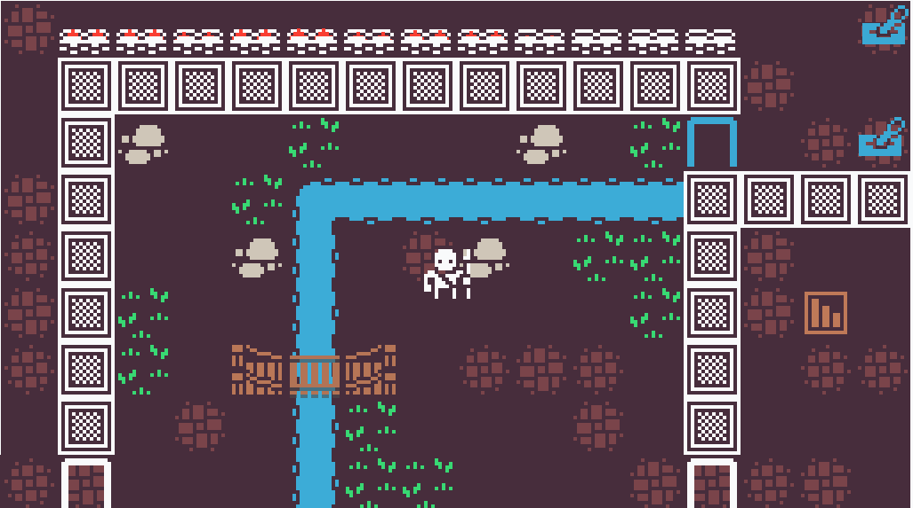

FAQ
Q: When does Slay the Spider come out?
A: That is yet to be decided. Development takes a long time and the game is still relatively early in development. That being said, I'd love the game to be done before the end of next year.
Q: How much will Slay the Spider cost?
A: Again, still to be decided, but you can expect somewhere between 10-20 dollars.
Q: What are some games that are similar to Slay the SPIDER?
A: Several games that have inspired Slay the Spider include XCOM for its procedural generation and excellent turn based combat, Slay the Spire for its seemingly endless combinations of playstyles, and Fire Emblem for its excellent storytelling. If you enjoy any of the games mentioned, there is a good chance you will enjoy this game!
Q: Will this game be released in early access?
A: There may be an alpha period before the game launches publicly to help me find any bugs, but I intend to publish the game in a 1.0 version. Afterwards for a period of a month or two I intend to update for bugfixes and potentially some small content updates.
Q: Where can I buy this game?
A: It will be available on Steam! Stay tuned for the launch of the Steam page!